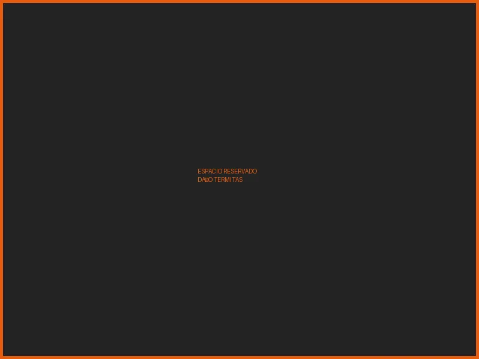

Control de Termitas
en Mexicali
Las termitas destruyen una propiedad desde adentro — en silencio, sin que lo notes. Cuando las ves, el daño ya está hecho. Nuestro tratamiento las elimina y te protege por los próximos 5 años.
La plaga que destruye
en silencio
Las termitas no son una molestia — son un riesgo estructural. Trabajan de adentro hacia afuera, comiendo vigas, marcos, muebles y cualquier material celulósico de tu propiedad. Para cuando las ves, llevan meses haciendo daño.
En Mexicali, el clima seco y caluroso crea condiciones ideales para las colonias de termitas subterráneas. Una colonia sin tratar puede destruir elementos estructurales en menos de dos años.
- Trabajan 24 horas al día, los 365 días del año
- Una colonia puede tener entre 60,000 y 2 millones de individuos
- El daño es silencioso — rara vez se ven antes de que el problema sea serio
- Los seguros de propiedad generalmente NO cubren daño por termitas
- Cuanto más tiempo pasan, más caro sale el tratamiento

Nuestro tratamiento
de termitas
Aplicamos un protocolo específico para el tipo de termita presente en tu propiedad — subterránea, de madera seca o de madera húmeda. No existe un tratamiento único para todas.
Usamos productos con registro COFEPRIS de probada eficacia. La aplicación puede incluir inyección de barrera química en el suelo, tratamiento localizado en madera o instalación de estaciones de monitoreo — según lo que requiera tu caso.
- Inspección inicial incluida — diagnóstico antes de cotizar
- Identificación del tipo de termita y nivel de infestación
- Propuesta económica personalizada y sin letra chica
- Productos con registro COFEPRIS — seguros y eficaces
- Certificado de fumigación al finalizar el servicio
GARANTÍA
DE 5 AÑOS
Nuestro tratamiento de termitas incluye 2 revisiones trimestrales durante el primer año y seguimiento de garantía por 5 años completos. Si en ese período aparece una reinfestación relacionada con el tratamiento, regresamos sin costo adicional.
Lo que incluye la garantía:
- ✓ 5 años de protección documentada
- ✓ 2 revisiones trimestrales en el primer año
- ✓ Certificado de fumigación al finalizar
- ✓ Seguimiento ante cualquier reinfestación
- ✓ Válida para residencias y empresas
Nuestro proceso
de control de termitas
Inspección detallada
Inspeccionamos cada área susceptible: vigas, marcos, cimientos, muebles y estructuras de madera. Identificamos la especie, el tamaño de la colonia y los puntos de acceso.
Propuesta personalizada
Te presentamos el diagnóstico completo y la propuesta económica. Te explicamos exactamente qué vamos a aplicar, cómo funciona el tratamiento y qué cubre la garantía.
Aplicación del tratamiento
Aplicamos el protocolo específico para tu tipo de termita: barrera química, tratamiento de madera o estaciones de monitoreo. Siempre con productos COFEPRIS.
Certificado + 5 años de garantía
Al terminar te entregamos el certificado de fumigación y arranca la garantía de 5 años con 2 revisiones trimestrales incluidas en el primer año. Tu propiedad queda protegida.
Lo que nos diferencia
en control de termitas
Inspección siempre primero
No cotizamos sin ver. Inspeccionamos personalmente tu propiedad antes de darte un precio o proponer un tratamiento. El diagnóstico correcto es la base del resultado correcto.
Garantía de 5 años real
No es un término vacío. Son 5 años documentados, con revisiones trimestrales incluidas y compromiso de regreso si hay reinfestación. La garantía más larga del mercado local.
Licencia Sanitaria vigente
Podemos expedir certificados de fumigación válidos ante COFEPRIS. Indispensable para empresas, inmobiliarias y cualquier trámite oficial que requiera respaldo documental del servicio.
Experiencia en Mexicali
Conocemos las especies de termitas presentes en el valle de Mexicali y su comportamiento en el clima fronterizo. Aplicamos el tratamiento correcto para la plaga de esta región.
Preguntas frecuentes
— control de termitas
Las señales más comunes son: madera que suena hueca al golpearla, pequeños montículos de aserrín fino en pisos o paredes, alas descartadas cerca de ventanas o puertas, manchas de humedad sin causa aparente en paredes o techo, y en casos avanzados, superficies que ceden al presionarlas. Si tienes alguna de estas señales, llama al 686 203 1217 — hacemos la inspección antes de cotizar.
El costo depende del tipo de termita, el tamaño del área afectada y el método de tratamiento requerido. No podemos darte un precio sin una inspección previa — es parte de nuestro proceso. Llama al 686 203 1217 y agendamos la inspección sin compromiso.
La garantía incluye 5 años de protección, con 2 revisiones trimestrales en el primer año. Si durante ese período aparece una reinfestación relacionada con el área tratada y bajo las condiciones del tratamiento aplicado, regresamos sin costo adicional. Los detalles específicos de cobertura se explican antes de comenzar el servicio.
Depende del tamaño del inmueble y el tipo de tratamiento. Un tratamiento residencial típico puede tomar entre 2 y 6 horas. En algunos casos puede requerirse más de una sesión. Te informamos el tiempo estimado durante la inspección previa.
Sí. Usamos productos con registro COFEPRIS. Dependiendo del tipo de tratamiento, puede pedirse desalojar temporalmente el área tratada. Nuestro técnico te indica exactamente qué áreas evitar y por cuánto tiempo — antes de comenzar.
Sí. Atendemos el sector residencial, comercial, industrial y gubernamental. Para empresas entregamos certificado de fumigación y toda la documentación requerida para auditorías. Contamos con REPSE vigente y Licencia Sanitaria. Llama al 686 203 1217.
También ofrecemos:
¿Listo para acabar con
las plagas?
Cada día sin tratar las termitas es un día que siguen destruyendo tu propiedad. Agenda tu inspección hoy — sin compromiso, sin costo adicional.